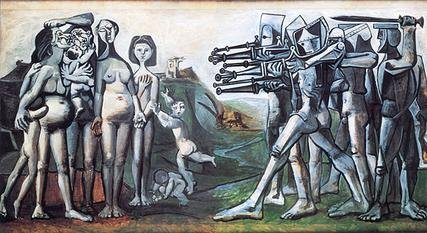

Massacre in Korea
Pablo Picasso · 1951 · Oil on plywood · 110 × 210 cm · Musée Picasso, Paris
In copyright. Look and learn: shown for study, not for download.
Picasso completed this picture on 18 January 1951; the Korean War had started the year before. He painted it on an unusually long plywood panel in a restricted palette of grays, greens and yellow. It was his third anti-war painting, after Guernica and The Charnel House, and he painted a small panel of Françoise Gilot and their daughter Paloma on the same day.